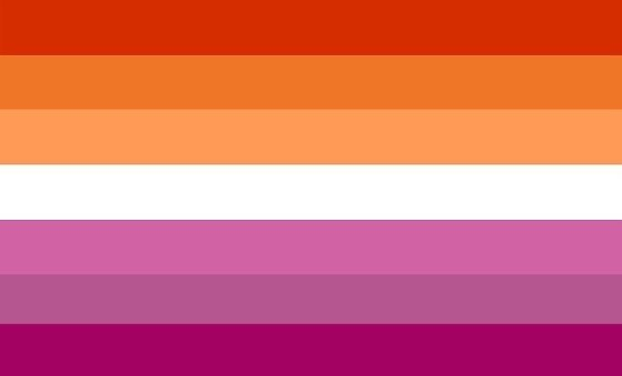
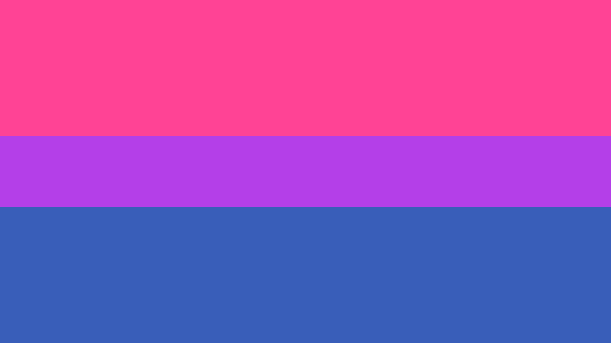

In a world that is gradually becoming more accepting of the LGBT community, the portrayal of WLW (woman-loving-woman) relationships in media has become more prevalent. While this may seem like an opportunity for previously marginalized relationships to get the representation they deserve, more often than not this "representation" still perpetuates stereotypes of relationships between lesbian and bisexual women.
In the media, relationships between lesbian women usually disregard the romantic aspects of their relationships in favor of seeing them eye candy for straight men. LGBT media that gets produced by non-LGBT people turns any LGBT character into a token minority, meaning someone whose entire characterization is based around their sexuality (or in other cases, their race or gender). Relationships between lesbians are reduced to 2 girls simply fooling around, or engaging in romantic/sexual acts for the male gaze.
Even worse, this belief perpetuates the belief behind corrective rape: that sexuality is something that can be "cured". In the case of lesbian relationships, being raped by someone who identifies as male will "cure" a victim and make her straight. This leaves the victim feeling violated, traumatized, and completely stripped of her right to identity.
Bisexuality is commonly (mistakenly) seen as attraction to both men and women. In reality, it is simply attraction to two or more genders. Regardless of how one interprets the definition, bisexuality is commonly reduced to "just being a phase" (much like other sexualities that fall under the LGBT umbrella) or simply a person being greedy. Those who identify as bisexual are perceived as being liars, more open to threesomes, or being more sexually promiscuous in general, which is a misinterpretation of the defintiion of being bisexual.
Bisexuality is seen as a 50/50 attraction to men and women, and despite being a member of the LGBT community, there is also biphobia present within gay and lesbian communities in that they are not "truly queer" so long as they are attracted to the opposite gender.
